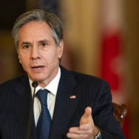
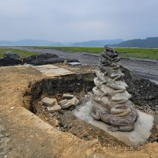
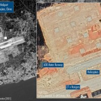

China now implying coronavirus may have originated in Italy
TAIPEI (Taiwan News) — China's state-run mouthpiece China Global Television Network (CGTN) published an article on March 22 making the extraordinary claim that the origin of the Wuhan coronavirus (COVID-19) remains unknown but that Italy might be its birthplace.
The article cited an NPR report in which Italian doctor Giuseppe Remuzzi said he had heard from general practitioners about a strange pneumonia that was very severe, particularly in old people, as early as December and even November.'This means that the virus was circulating, at least in [the northern region of] Lombardy and before we were aware of this outbreak occurring in China,' he said.
Although CGTN used this statement to suggest that the COVID-19 outbreak, which is widely understood to have begun in the central Chinese city of Wuhan, originated elsewhere, the doctor's response was meant to answer the question of why Italy was caught off guard when the coronavirus went rampant, rather than whether Italy had seen cases earlier than China.
As COVID-19 sweeps across the world, China is looking for chances to shed the accusation that it concealed the epidemic in its early stages, which led to it spreading worldwide.Earlier this month, Chinese Ministry of Foreign Affairs (MFA) spokesman Zhao Lijian (趙立堅) posted a tweet alleging that the US army might have brought the coronavirus to China or that the virus could have originated in the U.S. during flu season.
The U.S. has reprimanded China for spreading rumors amid the global crisis.President Donald Trump publicly called the coronavirus a 'Chinese virus' during a recent press conference, and State Department Spokeswoman Morgan Ortagus and her Chinese counterpart, Hua Chunying (華春瑩), have been trading jabs on Twitter, with Ortagus repudiating Hua's statement that China has been transparent and timely in helping the world tackle the virus.
Posted On: 2020-03-24T07:05:00
Posted By: Chris Chang



Content Date: 2020-03-24
Download Date: 2021-03-17
Document ID: L0C049D2T